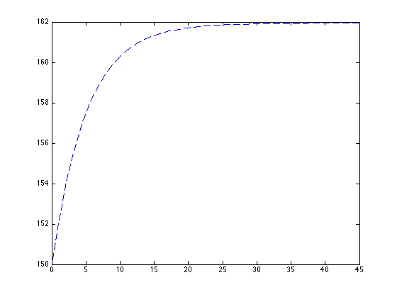
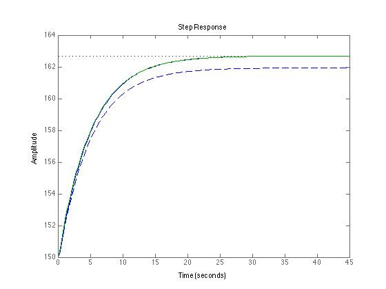
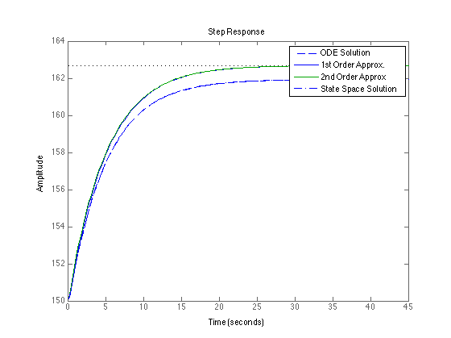
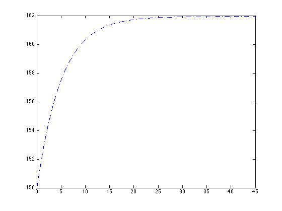

Modeling for Control.
Contents
Example. CSTR exhibiting nonlinear dynamics.
dT
1. -- = ((rho * q * Cp) * (Ti - T) + (-delta_H) * V * k(T) * Ca)/(V * rho * Cp)
dt dCa
2. --- = (q/V) * (Cai - Ca) - k(T) * Ca
dtAlso, by Arrhenius law:
k = ko * exp(-E/T)
Step 1: Specify parameters
clc;
clear all;
Cp = 0.8 ;
rho = 52 ;
V = 100 ;
q = 20 ;
E = 20000 ;
delta_H = -500 ;
ko = 2.4e15 ;
Step 2: Specify nominal inputs
To = 150;
CAio = 0.8 ;
k_To = ko * exp(-E/(To+460.67));
Cao = (q * CAio)/(q + V * k_To);
Step 3: Specify the right hand side of the differential equations
f = @(t,x) [-((q + V * k_To)/V) * x(1)-(Cao * k_To * (E/((To+460.67)^2))) * x(2) + (q/V) * heaviside(t);
-(((delta_H) * k_To)/(rho * Cp)) * x(1) - ...
((rho * q * Cp + delta_H * V * k_To * Cao * (E/((To+460.67)^2)))/(V * rho * Cp)) * x(2)];
Step 4: Specify initial conditions and time horizon
Cainit = 0;
Tinit = 0;
x0 = [Tinit Cainit];
tspan = linspace(0,45);
Step 5: Solve
[t,x] = ode15s(f,tspan,x0);
figure(1);
plot(t,x(:,2)+ To,'--');
hold on;

Step 6: Specify parameters for the transfer function
num = 12.69;
den = [0.41, 5.082, 1];
sys = tf(num,den);
step(sys + To);
stepinfo(sys)
num2 = 12.69;
den2 = [5 1];
sys2 = tf(num2,den2);
step(sys2 + To);
stepinfo(sys2)
ans =
RiseTime: 10.9863
SettlingTime: 19.6439
SettlingMin: 11.4579
SettlingMax: 12.6815
Overshoot: 0
Undershoot: 0
Peak: 12.6815
PeakTime: 36.6111
ans =
RiseTime: 10.9850
SettlingTime: 19.5604
SettlingMin: 11.4781
SettlingMax: 12.6897
Overshoot: 0
Undershoot: 0
Peak: 12.6897
PeakTime: 52.7292

Step 7: Specify the state-space matrices
A = [-((q+V*k_To)/V),-(Cao*k_To*(E/((To+460.67)^2))); -(((delta_H)*k_To)/(rho * Cp)),...
-((rho * q * Cp + delta_H * V * k_To * Cao * (E/((To+460.67)^2)))/(V * rho * Cp))];
B = [(q/V);0];
C = [0,0];
D = 0;
sys3 = ss(A,B,C,D);
[y,t,x] = step(sys3,45);
plot(t,x(:,2) + To,'-.')
legend('ODE Solution', '1st Order Approx.','2nd Order Approx','State Space Solution')

Using lsim to repeat the calculation under arbitrary conditions
T = 0:0.01:45;
u = ones(size(T));
[y1,t1,x1] = lsim(sys3,u,T);
figure(2);
plot(T, x1(:,2) + To,'-.')
